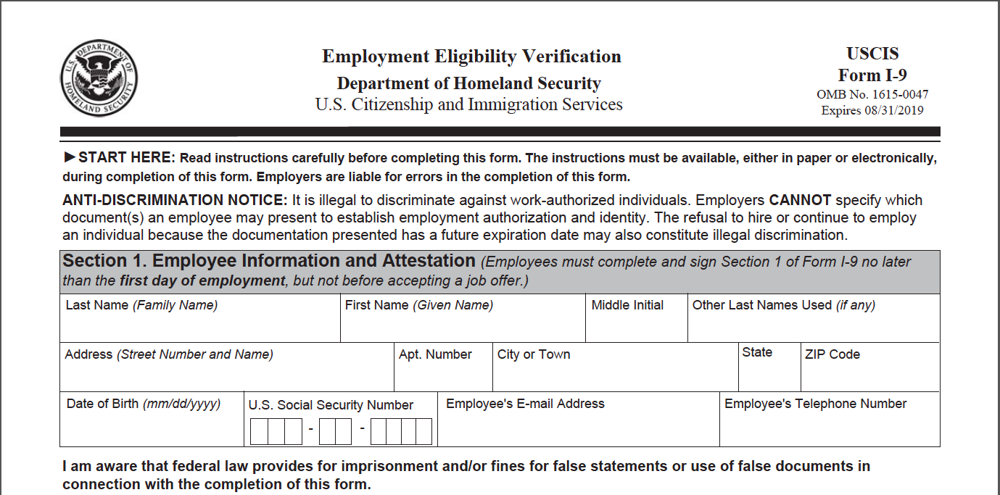

In order to work, you need to fill out the I-9 form. Employers use this to verify your identity.

To complete the I-9, you also need to show your employer proper identification. There are several personal identification documents that are important for your financial future: employment, banking, and investing.Do you have the documents you need?
Key items include:
Your birth certificate
Your social security card
A state ID or drivers license
If you do not have copies of these documents or if they have been lost or destroyed, it is important to take steps to obtain them as soon as possible so you have them when you need them.
Below is information about where to go to find out how to get these documents:
Birth Certificate: See the Illinois Department of Health site at www.dph.illinois.gov or call 217-782-6554 for information on documentation needed and site locations.
Social Security Card: See the Social Security Administration www.ssa.gov or 1-800-772-1213 for a list of documents needed to request a replacement card. There are many options such as birth certificate, school ID, medical record, transcript, etc.
State ID: (generally you need your birth certificate, social security card and proof of address) See the Illinois Secretary of State at www.cyberdriveillinois.com or 800-252-8980 for information.
(If needed) Matricula Card:The matricula card is an ID for Mexican nationals. Contact your local consulate. Contact your local consulate. Here is the site to find the Mexican consulate, www.embassyofmexico.org, and to find other consulates check www.consumer-action.org.